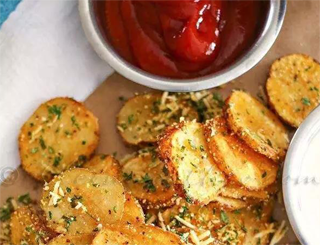
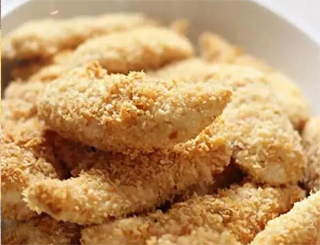

这些菜早进了医生黑名单，很多孩子却天天都在吃！
带“脆”字食品
“脆”字多见于受儿童喜欢的膨化小食品，具有酥、脆、香、甜等味道特点。都是做过煎、炸、炒等处理的，而且处理过程中还用到了很多油。正是因为有油，它们吃起来才嘎嘣脆，满口溢香。 市面上有不少果蔬脆片，一些人觉得，不是说要多吃果蔬吗？把零食换成果蔬脆片，方便、好吃还健康，岂不是一举多得？ 然而，这样的果蔬脆片（如香蕉片、脆枣、香菇脆、秋葵干），往往是真空油炸制成的，虽然真空油炸在安全性上优于普通油炸，但热量和脂肪含量还是很高。吃太多油脂会增加肥胖发生的风险，血脂异常或需要减肥的朋友，就别吃太多了。这类食品要添加蓬松剂和大量脂肪，才能实现香脆的口感。这类食品营养价值很低，水分极少，稍不小心，就容易摄入大量热量，引发肥胖。另外，如果孩子长期食用这类食品，对他们的大脑和体质发育都是有害无益的。经常吃膨化食品对儿童（特别是3岁以下的孩子）的伤害是很大的，因为膨化食品含铅量较高。


带“柳”字食品
蟹柳、鱼柳、牛柳、鸡柳、猪柳……在很多人心目中，这些食品由“肉”制作而来，是营养健康的代名词。然而，速冻后煎炸的牛柳、猪柳、鸡柳等，外面裹了厚厚的面粉，一口下去可能半口以上都是吸了大量油的淀粉，长期吃非但对人体没有好处，反而可能增加肥胖的风险。为了获得更好的口感，猪柳中一般会额外添加比较多的肥肉、适量的淀粉，营养价值要远远低于纯猪肉。 蟹柳其实不是蟹肉做的，而是一种冷冻鱼糜的仿生食品，其中含有淀粉和多种添加剂，但至少它含有鱼肉成分，而且脂肪含量很低，营养价值要高于其他几种食品，但也建议少吃。
带“酥”或“派”字食品
只要是带“酥”字的食品，都是美味的代言词，要不酥脆可口，要不酥软香甜。芒果酥、榴莲酥、凤梨酥、酥皮点心、起酥面包……都属于这类食品。建议身边的朋友要少吃。 因为要产生酥脆香甜的口感，制作过程中必须要加入大量黄油等油脂，不但脂肪含量高，还含有较多饱和脂肪和反式脂肪酸。为了调节口感，还需要加入大量糖。 以榴莲酥为例，很多榴莲酥中并没有真正的榴莲成分，多数独特香味只是来自于榴莲香精。 就市面上常见的酥类甜点来说，糖、脂肪及能量含量普遍较高，大部分产品的脂肪含量能达到20%-40%，多吃必然有害健康。除了酥类点心，牛角面包等起酥面包也是重灾区，虽然是口感最好的面包，但脂肪含量一般都在30%左右，不宜多吃，尤其不能给孩子多吃。 此外，蛋黄派、巧克力派、苹果派等名字里带“派”的食品，营养价值高的天然成分比例也较低，而糖、脂肪、香精和多种食品添加剂是它们迷人口感的主要原因